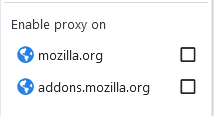

Welcome to Help Center, jump into the section you need help or if you're new to SmartProxy start with the Get Started guide.
Menu
In summary these are the things that you need in order to get started:
A proxy server acts as a gateway between you and the internet. It's an intermediary server separating you from the websites you browse. You will need at least one of them. You can find them from free or paid services across different providers on Internet.
The format of proxies normally are a Proxy Server or IP (e.g. 123.0.0.0) and a Port number (e.g. 8000). Usually these two are displayed in short format (e.g. 123.0.0.0:8000)
After you find a proxy server you need to let SmartProxy know by adding it in SmartProxy. To do this please read the Proxy Servers guide.
There are couple of proxy modes that are available here. For now you just need to change it to Smart Proxy mode.
To do this, click on the SmartProxy icon on the rop right corner of your browser and from the popup menu that will appear, select "Smart Proxy".
What this does is it activates SmartProxy and by default all traffic will not go through proxy server unless you define what site needs to be proxied by adding the domains and rules, which we are going to do next.
To read about the other proxy modes head to Proxy Modes guide.
When you are in Smart Proxy mode, you need specify which websites you want to go through proxy. To specify a site first visit the site normally then click on the SmartProxy icon on the rop right corner of your browser, in the "Enable proxy on" section you will see a list of domains, check the first one which usually has the broader coverage of the website. If they are already checked it means that they are already in your list and their traffic will go through proxy server.
Here is an example of how popup looks like:

To access and modify the domains and rules please head to Smart Profiles guide.
Proxy modes will dictate how the extension should work. You can change the active proxy mode from the menu that appears by clicking on the SmartProxy icon on the rop right corner of your browser. Here are the proxy modes that are available:
As the name suggests, when this mode is active no traffic will go through proxy servers. This also means that none of the rules you have added will have any effect.
Use this mode when you feel safe in your network and don't need use proxy servers.
This mode has zero effect on the speed of browser and that means you can the extension with mode for a long time.
This is the main mode of this extension. As the name my give you a clue, on this mode the SmartProxy extension will decide whether to pass through certain traffic of website from proxy servers or not.
How it does it is by using the rules to decide. These rules can be very simple as just mentioning the name of domain or can be complex using regex expressions. You can also subscribe to list of rules that someone else has created and published.
In summary: Website traffic will go through the nominated proxy server when it matched one of the defined rules, otherwise no proxy server will apply to the traffic.
To see how to define a rule in details please head to Smart Profiles guide.
When this mode is active all the traffic will go through the selected proxy server. However you can define exceptions. These exceptions are called Whitelists. A whitelisted domain or rule will dictate that for a certain or particular website, no proxy should apply. The type of rules and their logic is same as SmartProxy.
In this mode the extension nor the browser itself won't make any decision whether to apply proxy to traffic or not. This decision is passed on to the operation system. This means if you have a third party proxy server app that runs on your operation system it will have control of your browsing traffic.
Please note that all the traffic from browser will be sent to the proxy of operation system.
In here you will find options and configuration for general purpose of the extension. Here are the
The underneath description for this option is good enough and says it all. I will just quote it here for references:
If a rule matches the url of a tab, as a result proxy will be applied to connection of the tab. Normally there will be other requests in each page and those might not have a matched rule and thus won't have proxy applied to their connection. What `Enable proxy per tab/origin` option does is it makes sure that the whole page including all the connections from different domains and origins are using the same proxy that is applied the origin of the tab. Also this option eliminates the need to have a rule for every single domain. Please note that if no proxy is applied to the tab, proxy rules will continue to work and apply proxy to other connections in the page individually.
Synchronizing means that you can share your setting of SmartProxy between pcs, like your home PC and Work PC. It also keeps a backup online when in a case of data lose like uninstalling browser some other incident.
To enable Syncing first you need to login to your browser, the steps to do this is different in each browser, here is the guide for each supported browser by SmartProxy
If disabled the active profile selected from popup menu in the menu bar will no longer be synced. If in a case that you are using different active profile in your different PCs, you can disable this option to keep them different.
If disabled the active selected proxy server will not be synced. That is the `Default Proxy Server` that can be changed from both Proxy Servers tab and also from popup menu in the menu bar.
Error detection is referring to set of features that are monitoring the requests and detecting the failures, then providing a convenient way of displaying the list of fails and giving you the ability add rules for these failures.
Enabling and disable the error detection features.
Sometimes you don't want to receive error notifications from certain domain for some reason but still want to have the error detection working. In here you can do that by defining rules. By pressing the button a new tab will open and can add/edit/ delete the rules and maintain them.
The tab is called ignore failures and behaves exactly like smart rules with a exception that it applies to failed requests only.
Control wether you want to see the number of failures on icon in menu bar or not.
SmartProxy comes with the ability to switch between dark mode and light mode automatically.
Auto switch between light and dark mode. This follow your browsers theme which that can also follow the theme of your operation system.
From drop down you have two option to select from
Using external css file as an theme:
In the `Custom Styles (Css) Url:` box you can enter an url for light bootstrap theme. That being a bootstrap theme is a most otherwise you might end up with unexpected results.
As a suggestion you can use themes provided by bootswatch.com. While using external css be aware that they may contain link to font files or another external css files, for example in case of Cosmo theme of bootswatch the css file contains a link to Google fonts, this link.
External fonts or css linked inside the theme provided to the theme in Smartproxy will cause a delay. This delay can be unnoticeable if you don't use proxy or your connection is high speed. The problem will occur if your proxy server is slow for any reason. In this case the popup menu of SmartProxy will be very slow to display on first tries or even next tries, because as you've probably guessed it, tries to load the external css files each time and fails or even because there is no caching in server.
As a verdict on external css files always check the source and look for @import and @font-face and use with caution.
The same as the Light Theme rules and description also applies here as well. The only difference is that when AutoSwitch is selected when the browser theme changes to dark the settings of Dark Theme will be used for SmartProxy.
Here are the rest of settings.
This is checked by default which enables the shortcuts for certain actions in browser for SmartProxy. Just note that Google Chrome is limited to 4 shortcuts and in Firefox we can have 6 shortcuts in total. Just click the `View shortcuts` link to view the list of shortcuts and the bound key combination.
How to change the shortcuts:
This is enabled by default which will display a nice browser notification in bottom right side of screen whenever you press a shortcut and is handled by SmartProxy.
The proxy rules usually have a source which is helper to identify which site or domain is the rule needs to be applied to. When a rule is applied to the active tab (and the top level url) when this check is enabled the source will be displayed in the tooltip of the SmartProxy icon when hover mouse over it on the rop right corner of your browser. You can see an example of the tooltip in the screenshot below.
This behaves exactly same as above "Display applied rule source on badge" checkbox, except this time the actual rule will be displayed. This rule can be a match pattern or a RegEx expression.
Here is sample of tooltip in action:

Proxy servers are the essential part of SmartProxy, you will need to have at least one defined in this page in order to use other features of this addon.
Here in this tab you can define the proxy server and also select the default one if you have defined more than one.
In this dropdown you can select the the main global default proxy server for the addon to work with. When we say the default it implies that there are other ways of defining the selected proxy server for a connection/request. Here is the order of proxy servers selection:
Usually for number 1 and 2 the selected proxy is blank meaning that the choice will be number 3 the default proxy server which you have selected in this page.
If there is no proxy server defined SmartProxy will not function and it will like it is in Direct (no proxy) mode.
Here you can define the proxies. The available actions are that we will explain: Add Server, Edit, Delete, Import Proxies, Export Proxies and Clear all.
If you press Add or Edit you will see this popup modal. Here are the fields:
If you delete a proxy server that is selected as default proxy server, then the default will be the next proxy server. If there is no proxy server left then addons will stop normal function and work like it is in Direct (no proxy) mode.
If you want to share the list of proxies you have defined here with any other application you can use this button. It will give you the list of proxies. The format of file is something like this:
[SmartProxy Servers]
proxy-server:port [proxy-protocol] [name-of-the-proxy]
Here is a sample exported file:
[SmartProxy Servers]
127.0.0.1:9991 [HTTP] [ASProxyWing]
127.0.0.1:8888 [HTTP] [Fiddler]